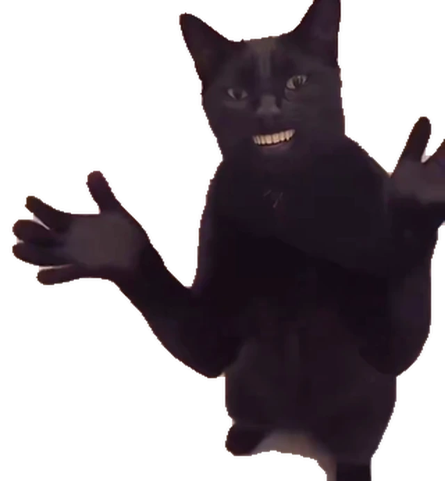

A LITTLE DESKTOP COMPANION
You pushed.
Cat approved.
작은 성공에도, 큰 박수.
설치 없이 띄우는, 나만의 작은 응원단.
Chrome·Edge 지원 환경에서는 다른 창 위에 띄울 수 있어요. 그 외 환경은 페이지 안에서 체험합니다.
~/my-project main
$ git push▌
Ready when you are.

웹 체험 · 실제 Git push는 감지하지 않습니다. 소리는 고양이 창에서 켤 수 있어요.
A SMALL BREAK
간식 하나,
박수는 듬뿍.
- 고양이 띄우기
지원 브라우저에서는 작은 플로팅 창이 열립니다. 창을 닫으면 체험도 종료됩니다.
- 간식 주기
고양이가 간식을 먹고 박수를 칩니다. 클릭하기 전까지 계속 응원해 줘요.
- 클릭하면 쉿, 그리고 악수
박수치는 고양이를 누르면 조용해지고 악수합니다. 간식은 언제든 다시 줄 수 있어요.
웹 체험과 다운로드 안내
웹 체험은 PC의 Git 명령이나 파일을 읽지 않습니다. 작은 창 기능은 지원되는 데스크톱 브라우저에서 사용할 수 있으며, 브라우저를 닫으면 종료됩니다. 모바일과 미지원 환경에서는 페이지 안에서 체험합니다.
이 저장소는 소스와 웹 체험만 제공합니다. 실행 파일 다운로드는 제공하지 않습니다.